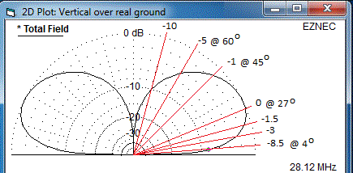

PSK31 Transponder Design Page
Bob Bruninga, WB4APR, lastname@usna.edu
and
Wally Ritchie, WU1Y
David Bowman, G0MRF
Peter Wyckoff, KA3WCA
John Swartz, AF4ZE
Steve Cerwin WA5FRF
Carl Lyster, WA4ADG
Mirek Kasal, OK2AQ
Tomas Urbanec, OK2PNQ
Petr Vagner OK2CPV
Peter Martinez, G3PLX
Starting 15 January 2014, this page collects the ideas involved in building a new PSK31
Transponder with a very short fuse for delivery in April 2014. It consists of a
28.120 MHz SSB linear receiver coupled with a 1 Watt or greater UHF FM transmitter as shown
in the block diagram to the right. This Transponder eliminates the UHF doppler on the
PSK31 signals and the 10m uplink reduces the PSK31 signal Doppler chage rate to
the range of 1 to 6 Hz/sec. A worst case rate can be higher but more rare and
the duration of that Doppler peak is short.
See the original PSK31 transponder concept
as it flew on PCSAT2 in 2006.
A full technical paper by G3PLX
covers the design and results from the PCSAT2 tests.
The previous flight tests on PCSAT2 and RAFT missions were
short lived due to low orbit for RAFT and the limited 1 year-return from ISS
(and the astronaut broke the antenna off).
But there are two more transponders ready to fly on PSAT and BRICSAT built at Brno
University as descibed in these technical papwers.
Psat transponder
BRICsat transponder
Physical Design: The wire whip antennas will all deploy from the top plage of the 3U cubesat
as shown to the right.
The tansponder board should be something that will physically fit on a single PC104 circuit board.
The only thing that really has to match the PC104 layout are the four corner posts and possibly some
bus pins on the PC104 bus connector that provide 8v unregulated power. The PC104 board is shown here:

3U CUBESAT BUS:The next image below shows an exploded view of the 3U cubesat
similar to the one that is offering us a ride. A google search turned up this European Space Agency
web page
that describers the bus.
This PSK31 team has little control over the cubesat nor little access to the complexities of
the spaceframe so we want this payload to be as autonomyous as possible.
The spacecraft will be in a low enough orbit that it will probably fly in a lawn-dart
attitude except when we are experimenting with the attitude control system.
We are only getting
space for our Transponder board and we are doing the top plate of the 3U cubesat and
all of the antennas shown in the top image above.
"
 Doppler Testing: At right is a generic image of the PSK-31 received spectrum waterfall.
It shows all the signals in the passband. A user just clicks on a signal and the software
decodes it and displayes the text in a text window.
PSK-31 has been around for a decade as a very easy way to do weak signal
contacts on HF. For several years the typical receiver software uses DSP to decode all
conversations in the passband simultaneously.
So far, PSK31 has not been used via Amateur Satellite due to the copmplexities
of Doppler. Two previous experiments had difficulties of one type or another and good
long term testing has not yet been accomplished in the Amateur Satellite Service.
Doppler Testing: At right is a generic image of the PSK-31 received spectrum waterfall.
It shows all the signals in the passband. A user just clicks on a signal and the software
decodes it and displayes the text in a text window.
PSK-31 has been around for a decade as a very easy way to do weak signal
contacts on HF. For several years the typical receiver software uses DSP to decode all
conversations in the passband simultaneously.
So far, PSK31 has not been used via Amateur Satellite due to the copmplexities
of Doppler. Two previous experiments had difficulties of one type or another and good
long term testing has not yet been accomplished in the Amateur Satellite Service.
KA3WCA did a lot of Doppler testing and concluded that
up to about 2 Hz/sec of Doppler could be copied with existing software (Digipan).
But at 3 Hz/sec copy began to degrade and then with 4 Hz/sec it died completely.
Also any rate above 1 Hz/sec were hard to establish initial lock.
See his Example Digipan decode.
Here are the WAV files he generated with Doppler changing at
0,
1,
2,
3, and
4 Hz per second.
If you want to see how your decoder works at those rates.
 For a near overhead pass the rate of change in the middle of the pass will be the
highest, but for the same pass, the rate of change of Doppler will be a minimum
during the initial and final portions of the pass. So even with un-modified
Digipan or other existing PSK31 receiver, a casual listener will be able to decode
the first and last several minutes of each pass (Doppler less than 2 Hz/sec).
For a near overhead pass the rate of change in the middle of the pass will be the
highest, but for the same pass, the rate of change of Doppler will be a minimum
during the initial and final portions of the pass. So even with un-modified
Digipan or other existing PSK31 receiver, a casual listener will be able to decode
the first and last several minutes of each pass (Doppler less than 2 Hz/sec).
Here are more of KA3WCA files I am still working on integrating into this web page:
dopplerRatePsk31_44_1ksps.wav,
originalPsk31_44_1ksps.wav.

Transponder Link Budgets:
See the PSK31 link budgets here.
The variation in path loss varies about 10 dB from horizon to high elevation angle as shown in
the above scale drawing of a typical LEO orbit. For this mission,
uplink stations transmit continuously throughout the pass since everyone in the passband
is operating full duplex with the UHF downlink and can see the same waterfall as everyone else.
For transmit, a 5 Watt transmitter and vertical monopole antenna over ground
is recommended. The vertical elevation antenna profile is shown here with the pattern
gain at various elevation angles.
This user TX antenna gain profile is combined with the variation in range gain from the horizon to
over 60 degree elevation as shown here at right. The combination gives an uplink power variation
per user of less than +/- 4 dB over 90% of the duration of the pass.
DSP Design Ideas by WU1Y: Wally offers a lot of DSP talent and proposes the
block diagram below. He also included this
PDF description of the above block diagram.
Unfortunately this design assumed a linear UHF transmitter and the +/- 9 kHz of Doppler
is orders of magnitude above our intentino when using an FM UHF transmitter.
Any DSP approach would be a new start and I am leary of a DSP approach
with a lot of processing because I'm not sure we even have a means for communicating
with it from the cubesat's bus for any post-launch adjustments.
I tend to want a simple analog hardware board?
Hardware Receivers: Peter Martinez, G3PLX who invented PSK-31 has
these AGC comments on how the
HF receiver should maintain a high audio signal level to fully modulate the FM downlink
transmitter. This does not work in linear systems, but should work well
with FM and some deviation limiting. As far as receiver design,
David Bowman, G0MRF of the Funcube team, offers a design he has prototyped in the past
that has a
29MHz input (should be 28 MHz), a down converter to 10.7MHz, a filter to 7.5kHz bandwidth,
an AGC system with 43dB range, a product detector to produce audio 0-7500Hz, and an
audio low pass filter and buffer to give audio for then transmission by the FM xmtr.
See his design
and image on the right below.
Similarly, Carl Lyster, WA4ADG offered the following prototype that
he has flown (or will fly?) on a balloon payload. Here are the top and bottom
photos (copper boards on left):
.
UHF TRANSMITTER: The open items at this point are the UHF transmitter
and the four-state control system. John, AF4ZE suggests this
this possible chip
as a starting point. But then he goes on to say that the data sheet has a 146MHz
reference design that may be worth looking at. No mention of whether it does
the UHF that we need or not.
WU1Y goes on to suggest "I like the low power of the TH72015 but this chip is designed for FSK.
It might be possible to make it work with a varactor pulled crystal driven from the 12 bit DAC.
2 class C amp stages following would get it to +33dBm at maybe 75-80% efficiency"...
David, G0MRF suggests "Re the TX. "there does seem to be a possible neat solution for a single channel
efficient transmitter. I looked up details of the Melexis TH72015 which is a small transmitter IC
for the 330 to 450 MHz region. Uses a single fundamental mode crystal at output freq divided by 32.
Power is selectable in 4 steps up to about 10dBm. Loop bandwidth is around 40kHz, which is plenty
and it's speced for -40 to +125C."...
Control System: The overall system power is under the control of the host spacecraft.
But the Amateur Transpondere is under these additional command states:
OFF . . - The transmitter is off
ON . . . - The transmitter is always on
AUTO - The transmitter only comes on when users are detected in the passband
HIGH - Higher power mode if power budget allows
His original PSK31_Detection.pdf.
Auto Mode: This mode has to detect users in the passband to turn on the Transmitter
and clearly save energy over the other 90% non-amateur areas of the globe.
KA3WCA did a simple test with off the air signals shown above to see if he could detect the
presence of energy at 31 Hz in the passband and found that if he squared the
signals there was a very clear detection of 31 Hz energy fading in and out as signals
combined in and out of phase.
Peter Martinez, G3PLX the father of PSK-31 has
these 31 Hz detection comments
on detection and suggests a long hang time and +/- .25 Hz bandwidth.
WB4APR comments
that the 567 PLL tone decoder could find
enough coherent 31.25 Hz energy fading in-and-out to keep retriggering a 555
1 minute timer on the TX line. Turns out if we try to limit the capture bandwidth to
only 1% it might take 20 seconds to capture a 31 Hz signal.
(see the slow design).
So, looking at the above detections
by KA3WCA, it is probably better to plan on wider bandwidth (14%) and quicker detections
to keep retriggering the 555 hang timer. Besides, if we hear anything, we probably want
the transponder to come up. So the design shown below uses
the a "faster" design and so its trigger time is about 1 second and
maximum cycle time is 1.5 seconds.
As a note, the non 31 Hz energy must be no more than 6dB more than the 31Hz energy so we low pass
filter it before the 567 wioth two RC stages.
.
The picture shows the detection of the 31 Hz when reasonablly strong PSK31 signals are in
the passband.
With this test, there is no audio gain beyond what comes from the headphone jack on the front
of my HF radio, so veryvweak signals
are not yet picked up. The LPF input filter stages are not yet
optimized. Since all uplink users will be 100% transmit duty cycle during the pass, I shortened
the PTT hang timer to 30 seconds. This gives plenty of time for 31 Hz detection to retrigger
the timer. The 567 and 555 will be lead shielded on the chip to reduce radiation issues.
{kind=link}